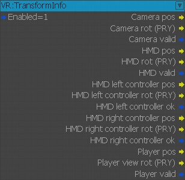
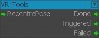
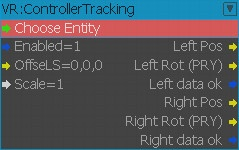
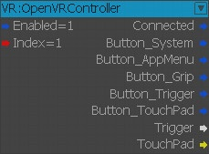

Обзор
HTC Поддержка Vive теперь включена в CRYENGINE. Эта статья поможет вам настроить VR, а также содержит важную информацию, которую вам следует знать перед началом работы.
Главы:
Начало работы
- Время выполнения: яЧтобы использовать HTC Vive, вам необходимо установить Steam.
- HTC Документация Vive: Пожалуйста, прочтите документацию по настройке и настройке устройства - Доступно в Steam.
- Видеодрайверы: Обновите драйвер(ы) видеокарты и убедитесь, что вы используете самую последнюю версию, поддерживающую HTC Vive.
- Рекомендуемая спецификация PC: Информация о требованиях к аппаратному обеспечению - Доступно с HTC.
Для помощи в настройке вашего устройства воспользуйтесь официальным приложением HTC Vive и документацией (доступны по ссылке выше).
Запуск двигателя с включенным Vive (игровой режим)
Чтобы включить VR в CRYENGINE, выполните следующие действия:
- Подключите устройство к компьютеру
- Убедитесь, что среда выполнения/приложение поставщика распознает вашу гарнитуру как готовую к использованию.
- Установите плагин OpenVR, добавив следующую строку в раздел плагина вашего файла .cryproject.
{ "type": "EPluginType::Native", "path": "CryOpenVR" } - Добавьте 'sys_vr_support=1' в ваш файл system.cfg или user.cfg.
- Запустите движок (от имени администратора)
После запуска движок должен выполнять рендеринг на вашем головном устройстве.
Внесение изменений в уровень (режим редактирования)
Если вы хотите внести изменения в уровень, то есть отредактировать свою игру, вам необходимо отключить VR.
- Удалите все плагины VR из вашего .cryproject, например. { "type": "EPluginType::Native", "path": "CryOpenVR" }. NOTE: Сюда входят плагины VR, связанные с HMD всех других производителей, а не только HTC Vive.
- Удалить sys_vr_support из вашего system.cfg или .cryproject
- Убедитесь, что все другие функции VR отключены.
При возврате в игровой режим все вышеперечисленные шаги/любые изменения, внесенные в режим редактирования, должны быть отменены.
Запустите Engine от имени администратора, если вы столкнулись с ошибкой 308.
Конфигурация входа
При желании вы можете привязать это непосредственно к клавише/кнопке геймпада. Этого можно достичь с помощью Flow Graph с помощью отладки:InputKey узел.
Альтернативно, вы можете изменить <game_folder>\Libs\Config\DefaultProfile.xml файл и назначьте там кнопку.
См. Настройка элементов управления и карт действий для получения дополнительной информации.
Flow Graph
Мы представили некоторые элементы управления/функции, связанные с устройством HMD и контроллерами движения. Доступ к этому можно получить через Flow Graph.
- VR:TransformInfo

Обеспечивает быстрый доступ к информации о положении и вращении, связанной с устройством VR.
- VR:Инструменты

Позволяет подключить вход для запуска команды RecenterPose.
- VR:ControllerTracking

Аналогично узлу VR:TransformInfo. Этот узел позволит вам получить доступ к информации о положении и вращении контроллера. Кроме того, вы можете указать значение масштабирования, а также ссылочный объект.
FlowNodes ниже относятся к конкретному устройству/платформе и предоставляются исключительно для целей взаимодействия с конкретным устройством, а не для обеспечения совместимости.
- VR:OpenVRController

Позволяет получать состояния кнопок, а также значения триггера и сенсорной панели данного контроллера. (Индекс обычно должен быть 0 или 1).
Кадров в секунду
HTC Vive будет запускать вашу игру ровно на 90 FPS, если вы сможете запустить ее ровно на 90 FPS или выше.
Если в какой-то момент ваша игра работает с дробью меньше 90 FPS, по умолчанию она временно снизится до 45 FPS, пока не будет восстановлено 90 FPS.
Имейте в виду, что значение меньше 90 FPS обычно не считается приятным занятием в VR.
Возможные проблемы, с которыми вы можете столкнуться
Редактор Sandbox не запускается после включения VR.
Решение:
- Удалите все плагины VR из вашего .cryproject, например. { "type": "EPluginType::Native", "path": "CryOpenVR" }
- Удалить sys_vr_support из вашего system.cfg или .cryproject
- Убедитесь, что все другие функции VR отключены.
NOTE: При возврате в игровой режим все вышеперечисленные шаги/любые внесенные изменения должны быть отменены.
Запуск редактора Sandbox с помощью user.cfg
Он попытается включить VR в режиме редактора, но не сможет.
Решение: Переименуйте user.cfg во что-нибудь другое, например _user.cfg.
Это позволит обойти чтение файла при загрузке редактора Sandbox.
В некоторых случаях программа запуска (GameSDK.exe) загружается с черным экраном.
Игра активна в фоновом режиме, но на экране ничего визуально не отображается.
Решение: Удалите папку пользователя в корне сборки. Затем перезапустите GameSDK.exe.